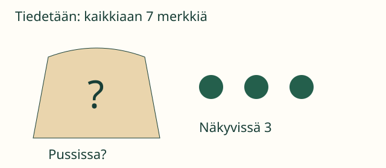

Loikka sulki pussiin muutaman pelimerkin. Määrä on olemassa, vaikka Aava ei vielä näe sitä.
Mikä luku on piilossa?
Tavoitteesi: erotat tunnetun luvun siitä luvusta, jota vasta etsitään.
Tuntematon tarkoittaa tässä lukua tai määrää, jota emme vielä tiedä. Se ei ole pussin nimi. Se ei myöskään tarkoita automaattisesti nollaa.
1. Sama pussi, sama määrä

Aava tietää: merkkejä on kaikkiaan seitsemän ja näkyvissä on kolme. Hän etsii pussissa olevien merkkien määrää.
Piirrä seitsemän merkkiä. Siirrä niistä kolme pussin viereen. Neljä jää pussiin. Puuttuva määrä oli neljä. Tarkista: neljä pussissa ja kolme vieressä on seitsemän.
Ennen pussin avaamista sen määrä oli jo neljä. Tiedon puuttuminen ei muuttanut määrää. Uusi, erilainen pussi voi sisältää eri määrän.
2. Piilotettu luku voi olla kaksinumeroinen
Loikan kortissa on yksi luku: kaksitoista. Kortti käännetään nurin. Sovitaan, että ruutu □ tarkoittaa tätä piilotettua lukua. Kun kortti avataan, ruudun arvoksi selviää 12. Yksi ruutu voi tarkoittaa kokonaista lukua, ei vain yhtä numeroa.
Mieti: jos pussin sisällä ei olisi yhtään merkkiä, voisiko sen määrä silti olla aluksi tuntematon?
Katso ajatus
Voi. Jos emme vielä tiedä, onko pussi tyhjä, määrä on meille tuntematon. Tutkiminen voi paljastaa määräksi nollan. Tuntematon voi siis osoittautua nollaksi tai muuksi luvuksi.
Tutki ja tarkista
Valitse tutkittava tapaus. Mieti ensin, mitä tietoa etsit. Voit paljastaa sisällön ja aloittaa saman tapauksen uudelleen.
Ilman JavaScriptiä voit tutkia yllä olevan pussiesimerkin seitsemällä oikealla pelimerkillä.
Tarvitsen apua
Kerro omin sanoin: mitä jo tiedän? Mitä en vielä tiedä? Voit näyttää sormella kohdan, jonka luku puuttuu. Jos laskumerkit ovat vaikeita, käytä oikeita merkkejä tai piirrä ne.
Lisäpohdinta
Kahdessa eri pussissa voi olla sama määrä. Eri näköiset pussit eivät takaa eri lukuja. Toisaalta samaa pussia katsomalla uudelleen määrä ei vaihdu, jos sisältöä ei muuteta.
Opettajalle ja ilman ruutua
Luokat 3–6, myös vanhemmalle aloittelijalle. Tavoite on tuntemattoman merkitys, ei yhtälönratkaisun nopeus. Kymmenen sisäinen laskeminen ja määrien yhdistäminen toimivat esimerkissä tukitaitoina. Tarjoa seitsemän konkreettista merkkiä ja laske yhdessä, jos taito puuttuu. Merkit +, − ja = eivät ole aloittamisen ehto: M-ARITH-01 on graafissa vahva tuki, ei pakollinen portti.
Kirjainmuuttuja, usean tuntemattoman sopimukset ja yhtälömuunnokset jätetään seuraaville tunneille. Tässä ruutu on aina yksi kokonainen luku yhdessä nimetyssä tilanteessa. Pidä esimerkin pussin määrä muuttumattomana tutkinnan ajan.
Ruutuvalinta kertoo vain tämän käsitteen tulkinnasta. Paljastamisen jälkeen tiedetty vastaus ei ole itsenäisen päättelyn näyttöä; mitään osaamistilaa ei tallenneta.
Lähtökysymys: Aava tietää, että suljetussa pussissa on jokin määrä. Mikä on tuntematon: pussin nimi vai merkkien lukumäärä? Miten määrän voisi selvittää?
 Loikka sulki pussiin muutaman pelimerkin. Määrä on olemassa, vaikka Aava ei vielä näe sitä.
Loikka sulki pussiin muutaman pelimerkin. Määrä on olemassa, vaikka Aava ei vielä näe sitä.